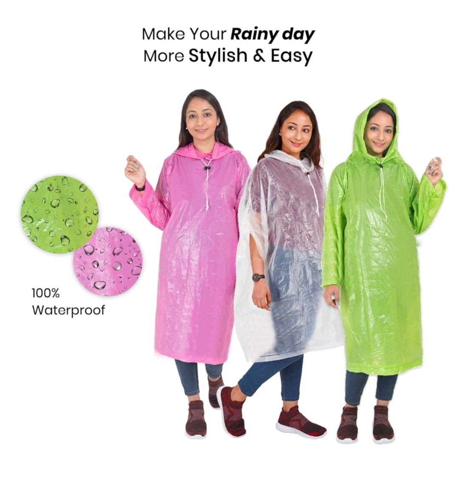
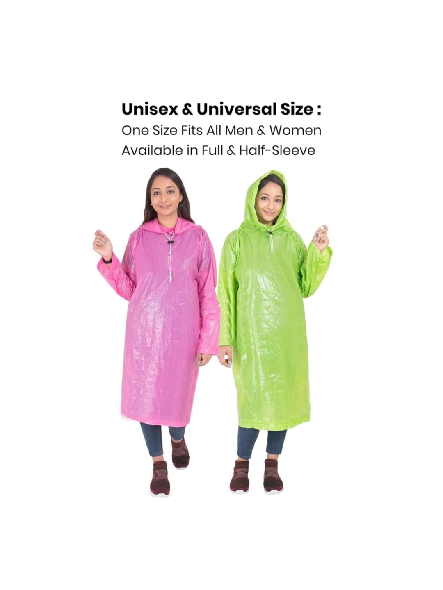
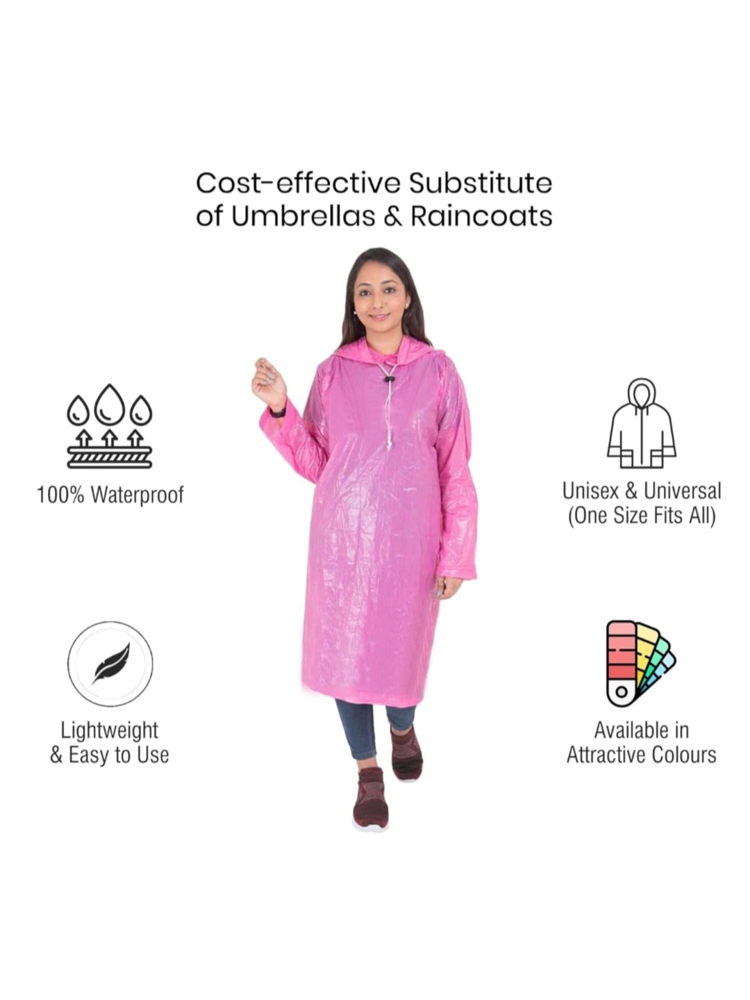
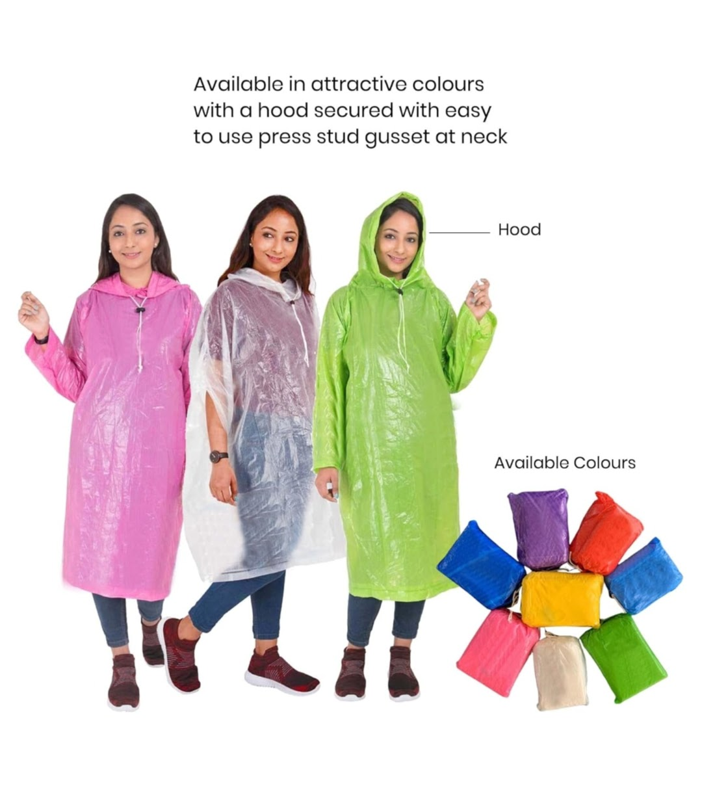

Lightweight waterproof rain ponchos designed to provide instant
protection during rain, outdoor work, travel, and emergency use.




Product Overview
Rain Ponchos are simple, effective rain protection garments
designed to keep users dry during sudden or continuous
rainfall.
Manufactured using lightweight waterproof plastic material,
these ponchos are easy to carry, quick to wear, and suitable
for single-use or limited reuse depending on thickness.
Key Features
Lightweight and easy to wear
Waterproof and wind resistant
Compact and foldable for easy carrying
Available in disposable and reusable variants
Suitable for all age groups
Specifications
Material: LDPE / Plastic Film
Design: Hooded poncho style
Thickness: Varies by model
Colour: Transparent / Blue / Yellow (varies)
Usage: Rain protection
Applications & Use Cases
Monsoon protection for pedestrians and commuters
Outdoor events and crowd management
Emergency rain protection kits
Delivery personnel and field staff
Travel, trekking, and pilgrimage use
Best Suited For
Municipal bodies and disaster management teams
Event organizers and outdoor venues
Delivery companies and field service teams
Retailers and travel kit suppliers
Selection Note
For Indian monsoon conditions, disposable ponchos are ideal
for emergency and short-term use, while thicker reusable
ponchos are recommended for repeated outdoor work. Proper
size and hood fit ensure better rain protection during wind.
Commonly Used Along With
Raincoats and Waterproof Jackets
Safety Boots or Gumboots
Emergency Kits and Travel Accessories
Ready to order or need more details?Send us your requirement directly on WhatsApp — we respond within minutes.
Are rain ponchos reusable?
Lightweight ponchos are generally disposable, while
thicker variants can be reused multiple times with
proper handling and drying.
Are rain ponchos suitable for Indian monsoon?
Yes. Rain ponchos are commonly used during Indian monsoon
for quick and convenient rain protection, especially
during travel and outdoor work.
Do ponchos provide full body coverage?
Ponchos are designed to cover the upper body and torso.
Length may vary by size and model.
Are bulk supplies available for institutions?
Yes. Rain ponchos can be supplied in bulk quantities for
events, municipalities, disaster response teams, and
commercial buyers.
What material is used in rain ponchos?
Most rain ponchos are made from LDPE or similar waterproof
plastic films that offer flexibility and water resistance.
Are custom colours or packaging options available?
Yes. Custom colours, branding, and packaging options are
available for bulk and promotional requirements.